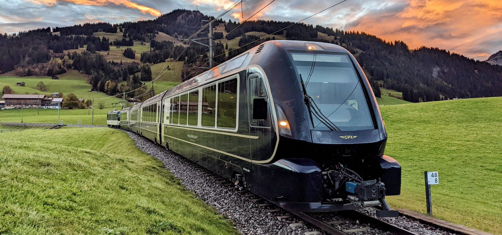

Travelling in Switzerland
Switzerland is a popular travel destination known for its stunning
Alpine scenery and efficient public transportation.

Top Scenic Train Troutes in Switzerland

The Glaciver Express is a direct Panorama Express
train connecting two major mountain resorts of Zermatt and St.Moritz
via Andermatt in the central Swiss Alps.

The Bernina Express connects Chur
to Tirano in Italy by crossing the Swiss Engadin Alps. The train
runs along the Rhaetian Railway
in the Albula/Bernina Landscapes.

The GoldenPass Train routes in the Swiss
Alps with its base in Montreux. It starts in picturesque
Interlaken and ends in Montreux.

The Gotthard Panorama Express connects Lucerne to Lugano,
crossing the Swiss Alps from North to South through the Gotthard charset
tunnel.